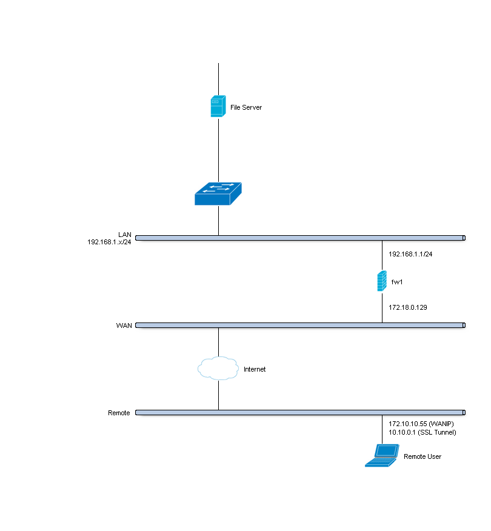
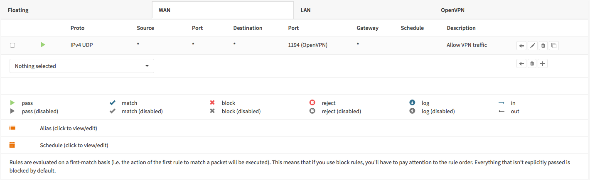
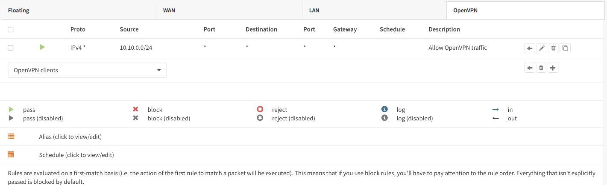

| 版本 | 日期 | 状态 | 修订人 | 摘要 |
|---|---|---|---|---|
| V1.0 | 2018-01-06 | 创建 | 开源方案 | 初始版本 |

| IP类别 | IP信息 |
|---|---|
| WAN IP | PPPOE(172.18.0.129) 这里参考图中ip而已 |
| LAN IP | 192.168.1.1⁄24 |
| LAN DHCP Range | 192.168.1.100-192.168.1.200 |
| SSL VPN Clients | 10.10.0.0/24 |
VPN server 需要使用ca证书签发客户端或者服务端证书
从导航菜单 System->Trust->Authorities 进入,点击右上角的 add or import CA按钮 进行设置ca证书
这里举例我们的设置如下:
| 配置项目 | 配置内容 |
|---|---|
| Descriptive name | SSL VPN CA |
| Method | Create an internal Certificate Authority |
| Key length (bits) | 4096 |
| Digest Algorithm | SHA512 |
| Lifetime (days) | 365 |
| Country Code : | CN |
| State or Province : | Zhejiag |
| City : | Hangzhou |
| Organization : | 51know |
| Email Address : | spam@ops.com |
| Common Name : | internal-sslvpn-ca |
点击保存按钮，保存新的CA证书
从导航菜单 System->Trust->Certificates 进入，点击右上角的 add or import certificate 按钮进行签发新证书.
举例配置如下(其他的默认配置即可):
| 配置项目 | 配置内容 |
|---|---|
| Method | Create an internal Certificate |
| Descriptive name | SSLVPN Server Certificate |
| Certificate authority | SSL VPN CA |
| Type | Server Certificate |
| Key length (bits) | 4096 |
| Digest Algorithm | SHA512 |
| Lifetime (days) | 365 |
| Country Code : | CN |
| State or Province : | Zhejiag |
| City : | Hangzhou |
| Organization : | 51know |
| Email Address : | spam@ops.com |
| Common Name : | SSLVPN Server Certificate |
点击保存按钮，保存新签发的服务端证书
从导航菜单 System->Access->Users 进入，点击右下角的 加号 按钮，进行新用户的添加
创建用户分为2部，首先添加一个基础信息用户,第二部(保存后) 会定向到申城用户证书的界面
| 配置项目 | 配置内容 |
|---|---|
| Username | Donald |
| Password (2x) | S3cr3tP@ssw0rd |
| Full name | Donald Duck |
| Certificate | True |
| 配置项目 | 配置内容 |
|---|---|
| Method | Create an internal Certificate |
| Descriptive Name | Leave default (Donald) |
| Certificate authority | SSL VPN CA |
| Type | Client Certificate |
| Key length | 4096 |
| Digest Algorithm | SHA512 |
点击保存即可
Adding a new SSL VPN server is relatively simple. We’ll start by adding one that uses our two factor authentication. This setup offers a good protection and it is easy to setup on the clients as each client can use the same configuration.
Go to VPN->OpenVPN->Servers and click on add server in to top right corner of the form.
For our example will use the following settings:
Note
The setting Hardware Crypto is not used for new systems equipped with AESNI, when the aesni module is loaded it will be used automatically.
| 配置项目 | 配置内容 |
|---|---|
| Server Mode | Remote Access (User Auth) |
| Backend for authentication | TOTP VPN Access Server |
| Protocol | UDP |
| Device Mode | tun |
| Interface | WAN |
| Local port | 1194 |
| Description | My SSL VPN Server |
| TLS Authentication | Leave both on enabled (checked) |
| Peer Certificate Revocation List | N/A |
| Server Certificate | SSLVPN Server Certificate (CA: SSL VPN CA) |
| DH Parameters Length | 4096 |
| Encryption algorithm | AES-256-CBC (256-bit) |
| Auth Digest Algorithm | SHA512 (512-bit) |
| Hardware Crypto | No Hardware Crypto Acceleration |
| Certificate Depth | One (Client+Server) |
| IPv4 Tunnel Network | 10.10.0.0/24 |
| IPv6 Tunnel Network | Leave Empty |
| Redirect Gateway | Leave Unchecked |
| IPv4 Local Network/s | 192.168.1.0/24 |
| IPv6 Local Network/s | Leave Empty |
| IPv4 Remote Network/s | Leave Empty |
| IPv6 Remote Network/s | Leave Empty |
| Concurrent connections | Leave Empty |
| Compression | Enabled with Adaptive Compression |
| Type-of-Service | Leave Unchecked |
| Duplicate Connections | Leave Unchecked |
| Disable IPv6 | Checked |
| Dynamic IP | Leave Unchecked |
| Address Pool | Leave Checked |
| Topology | Leave Unchecked |
| DNS Default Domain | Leave Unchecked |
| DNS Servers | Leave Unchecked |
| Force DNS cache update | Leave Unchecked |
| NTP Servers | Leave Unchecked |
| NetBIOS Options | Leave Unchecked |
| Client Management Port | Leave Unchecked |
| Renegotiate time | 0 |
Note
Renegotiate time is used to renegotiate data channel key after n seconds (default=3600).When using a one time password, be advised that your connection will automatically drop because your password is not valid anymore.Set to 0 to disable, remember to change your client when changed later.
To allow SSL VPN client connections, we should allow access to the OpenVPN server port on the WAN interface. When using multiple servers we need to open up each port.
For our configuration we only use one server accessible on udp port 1194.
 Next we also need to allow traffic from the VPN clients to our LAN interface. For our example we will allow client to access anything on our local area network, however you may decide just to allow traffic to one or more servers.

Go to VPN->OpenVPN->Client Export and select the newly created VPN server from the list. Leave everything default and Download the openvpn 配置文件 如下图

Now on your Mac or Windows PC unpack the bundle and import the Viscosity.visc file. Double clicking it should be enough to get it imported. When asked for an application to open the file with search and select Viscosity.
Some sample screenshots (Mac OSX):
../../_images/viscosity_files.png Import Configuration
../../_images/viscosity_imported.png Connect & login
In the password field enter your TOTP token first followed by your password.
../../_images/viscosity_login.png Connected
../../_images/viscosity_connected.png Android For Android users we recommend using OpenVPN for Android (https://play.google.com/store/apps/details?id=de.blinkt.openvpn) from Arne Schwabe.
Go to VPN->OpenVPN->Client Export and select the newly created VPN server from the list. Leave everything default and Download the inline Android configuration from the list of export options under Client Install Packages.
Import the hostname-udp-1194-ios-config.ovpn file into OpenVPN for Android. Clicking on the file should be enough to get it imported. When asked for an application to open the file with, select OpenVPN for Android.